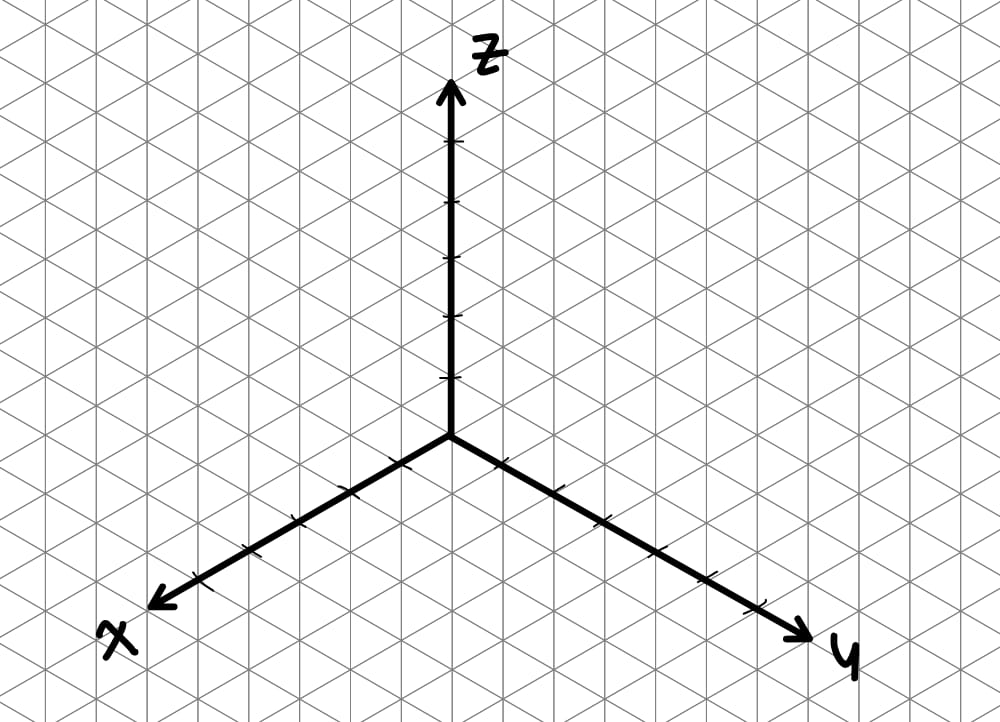
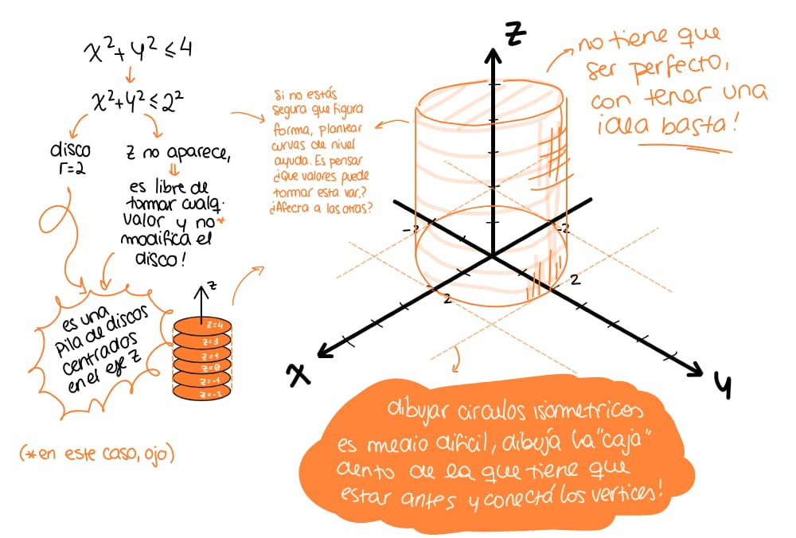
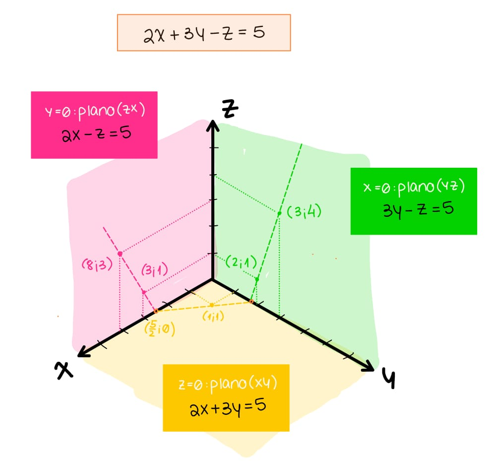
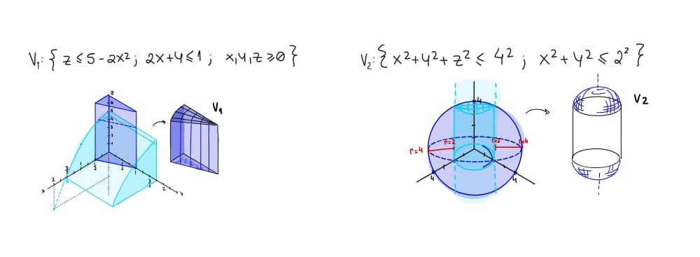

Graficá en 3D y cambiá de coordenadas como un campeón.
Paso 1
Dibujá los 3 ejes teniendo en cuenta los límites del sólido. Si sólo te piden el primer octante, no dibujes los ejes negativos (o dibujalos punteados/tenues) para no confundirte con partes que no forman parte del recinto.

Imagen: recursos/Graficar3D_paso1.jpeg
Paso 2
Identificá las condiciones del enunciado y traducilas a las fórmulas conocidas. Por ejemplo: x^2+y^2\le4 es un cilindro (o un círculo, si aparece sola en el plano xy); z=x^2+y^2 es un paraboloide; x+y+z=6 es un plano.

Imagen: recursos/Graficar3D_paso2.jpeg
Paso 3
Usá esas fórmulas para construir las trazas (las curvas que se obtienen al cortar la superficie con cada plano coordenado). Si la fórmula involucra las 3 variables, anulá una a la vez y dibujá la traza resultante en el plano de las otras dos.

Imagen: recursos/Graficar3D_paso3.jpeg
Paso 4
Uní las trazas (si son de la misma fórmula) o superponelas (si corresponden a fórmulas distintas) para visualizar el sólido completo.

Imagen: recursos/Graficar3D_paso4.jpeg
Paso 5
Si tenés una inecuación y no sabés para qué lado pintar: elegí un punto de prueba (lo más simple, el origen, si no forma parte del borde) y reemplazalo en la inecuación. Si se verifica, pintá el lado que incluye ese punto; si no se verifica, pintá el lado que lo excluye.
¿Qué es un cambio de variable?
Es sólo una forma más cómoda de describir la misma región y de escribir dA o dV. Elegís el sistema que hace que las superficies que limitan tu recinto se escriban lo más simple posible (idealmente, como una constante).
Polares (integrales dobles)
$$x = r\cos\theta$$ $$y = r\sin\theta$$ $$dA = r\,dr\,d\theta$$¿Cuándo conviene? Si D está limitado por circunferencias centradas en el origen y/o semirrectas que parten del origen, o si el integrando tiene x^2+y^2.
Cilíndricas (integrales triples)
$$x = r\cos\theta \qquad y = r\sin\theta \qquad z = z$$ $$dV = r\,dr\,d\theta\,dz$$¿Cuándo conviene? Cuando el sólido tiene simetría alrededor de un eje (típicamente z): cilindros, paraboloides con eje z, conos con eje z, o cuando el integrando tiene x^2+y^2.
Esféricas (integrales triples)
$$x = \rho\sin\varphi\cos\theta \qquad y = \rho\sin\varphi\sin\theta \qquad z = \rho\cos\varphi$$ $$dV = \rho^2\sin\varphi\,d\rho\,d\varphi\,d\theta$$¿Cuándo conviene? Cuando el sólido tiene simetría alrededor de un punto (esferas o conos con vértice en el origen), o el integrando tiene x^2+y^2+z^2.
El caso difícil: ¿cilíndricas o esféricas?
Acá es donde más se confunde, porque a veces literalmente hay una esfera en el enunciado y aun así conviene cilíndricas. El truco no es preguntarte "¿hay una esfera?", sino: de todas las superficies que limitan el sólido, ¿cuál es la más incómoda de escribir, y en qué sistema esa superficie en particular se simplifica?
Ejemplo: V=\{x^2+y^2+z^2\le3,\ 0\le z\le x^2+y^2\}, la intersección de una esfera con un paraboloide.
Probemos esféricas primero: la esfera es trivial (\rho\le\sqrt3), pero el paraboloide z=x^2+y^2 se convierte en \rho\cos\varphi=\rho^2\sin^2\varphi, es decir \rho=\dfrac{\cos\varphi}{\sin^2\varphi}, un límite feo, con φ en el denominador. Mala señal.
Probemos cilíndricas: el paraboloide es z=r^2 (inmediato), y la esfera se despeja como z\le\sqrt{3-r^2}, no tan trivial como en esféricas, pero perfectamente manejable. Como ninguna de las dos queda fea, y la superficie más problemática (el paraboloide) se resuelve mejor acá, cilíndricas gana.
Regla práctica para decidir rápido:
1. Mirá cada superficie que limita el sólido por separado: ¿es una esfera o un cono con vértice en el origen (esféricas la deja como constante), o es un paraboloide/cilindro/plano horizontal (cilíndricas la deja como z=r^2, r=\text{cte} o z=\text{cte})?
2. Si todas las superficies son esferas/conos por el origen, esféricas gana sin dudar.
3. Si aparece aunque sea un paraboloide, un cilindro o un plano (incluso si también hay una esfera), probá primero cilíndricas: la esfera casi siempre se puede despejar sin drama, mientras que el paraboloide en esféricas suele quedar poco manejable.
4. Si una variable te queda despejada de forma rara (fracciones o funciones trigonométricas en el denominador, exponentes cruzados), es señal de que probaste el sistema equivocado: cambiá al otro.